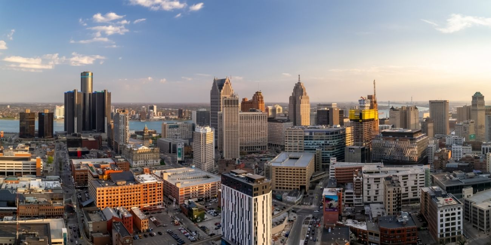

About Detroit
Detroit is the largest city in Michigan and is known as the birthplace of the American automobile industry. It's home to the “Big Three” auto companies: General Motors, Ford, and Chrysler. Detroit has a rich musical heritage too, especially known for Motown music. The city has faced economic challenges but has been revitalizing with new businesses and cultural developments. Attractions like the Detroit Institute of Arts and the Detroit Riverwalk make it a vibrant place to visit. Detroit's history, culture, and efforts to rebuild make it a fascinating city.
- Population: 636,787
- Year Incorporated: 1815
- Region: Southeast
- Classification: Urban
- Average Income: $37,761
Sources: US Census - Detroit